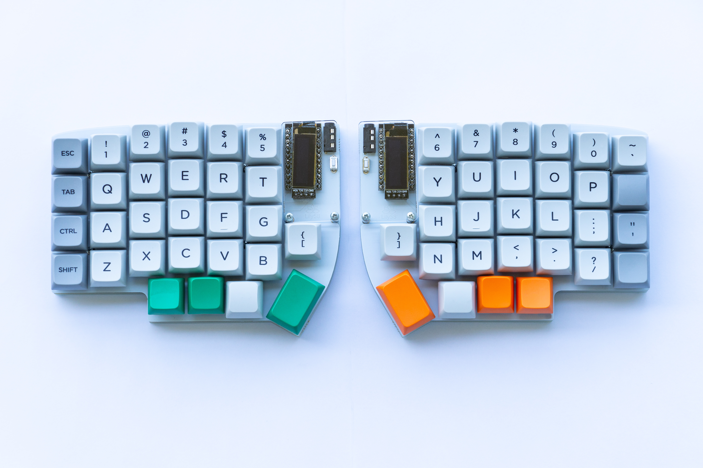
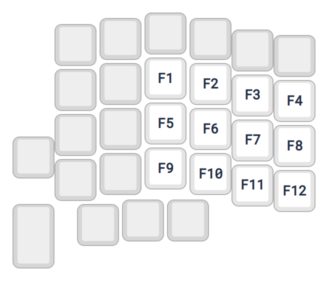

This post is about how I achieved the power of 15 keys using just 4 keys on the keyboard. I go over the motivation, the design, and the implementation. At the end, I wrap the solution into a small library. Maybe you’ll find it useful!
Rationale
I use a compact keyboard called the Lily58 as my main keyboard. It’s a column-staggered split keyboard.

The Lily58 keyboard. Photo from github.com/kata0510/Lily58
As the name implies, it has only 58 buttons instead of the normal 80+ buttons. Space was limited and it was hard to fit all the letters, numbers, symbols, and other unique keys that I need.
The function keys (F1, F2, F3, etc) were particularly cumbersome. I don’t use them very often, yet they take a lot of space. You can see with my previous function key layout that they’re not very space-efficient:

My previous layout with function keys on the right half of the keyboard. It’s on a layer that I call the “function layer”.
Luckily, the Lily58 is programmable! Using the framework slash firmware called QMK, I can program the keyboard to add whatever functionality I wanted. And that’s exactly how I optimized the function keys’ space usage.
The scheme
To make space for other keys, I devised a different way to input function keys, a bitwise input scheme. In this scheme, you input in terms of bits; there is one key for each bit. For example, take four keys; if we assign them to bits 1, 2, 4, and 8, we can represent any number from 0 to 15 by pressing a combination of those keys.
Interactive diagram! Click the buttons to toggle the corresponding bits.
With 15 different combinations, we have more than enough inputs to cover the function keys! Each decimal number is directly mapped to a function key in a 1-to-1 correspondence. For example, pressing the bit combination for decimal 1 will input F1, pressing the combination for decimal 2 will input F2, and so on.
Did you know that there are 24 function keys in total?
These are the F1, F2, F3, F4, F5, F6, F7, F8, F9, F10, F11, F12, F13, F14, F15, F16, F18, F19, F20, F21, F22, F23, and F24 keys.
Bit wise, we’d need just 5 bits - 5 keys to cover all 24 function keys.
Implementation
So how does it work? Let’s dive into the practical details.
First of all, the implementation doesn’t care about timing, so you can press the buttons as sloppily as you want. The key thing is that the algorithm waits for you to release all the buttons before committing the resulting combination.
To do any of this, we need a way to keep track of the state of the bits. Let’s use an unsigned integer variable to store it.
When a button is pressed, its corresponding bit is set to 1. But when released, we do not necessarily clear the bit back to 0. There will be a separate mechanism for flushing the accumulated bits.
Let’s call the variable accumulator.
static uint8_t accumulator = 0;
void on_press(uint16_t keycode) {
int index = get_bit_index(keycode);
if (index == -1) return;
accumulator |= (1 << index);
}
Now, the accumulated bits will only be evaluated when all of the buttons have been released. A quick way of knowing when that happens is to watch for the last button to be released. To do this, another integer variable tracks how many buttons are currently being pressed.
+ // Keep count of keys being pressed
+ static int8_t pressed_keys = 0;
static uint8_t accumulator = 0;
void on_press(uint16_t keycode) {
int index = get_bit_index(keycode);
if (index == -1) return;
+ // Count key being pressed
+ pressed_keys++;
+
accumulator |= (1 << index);
}
+ void on_release(uint16_t keycode) {
+ int index = get_bit_index(keycode);
+ if (index == -1) return;
+
+ // Count key being released
+ pressed_keys--;
+ }
Once the last button is released, it is time to flush the input. The resulting decimal number is mapped to a function key that will finally be sent to the computer.
void on_release(uint16_t keycode) {
int index = get_bit_index(keycode);
if (index == -1) return;
pressed_keys--;
+ // When all keys have been released, flush the input
+ if (pressed_keys <= 0) {
+ // Map accumulated value to the corresponding F-key code
+ send_to_computer(FUNCTION_KEYS[accumulator]);
+
+ // Reset state for next round
+ pressed_keys = 0;
+ accumulator = 0;
+ }
}
And that’s about it! This is how I got more space on my keyboard. As a bonus, it forces me to practice converting decimal to binary! 😂
Of course, the code shown here skips some details and totally lacks integration with the QMK framework, but you get the gist.
There’s one limitation to this approach though: you cannot hold down a function key. It will only send the function key at the end when the last button has been released. I haven’t found a need to hold down function keys so it’s not a problem for me right now.
I recreated the algorithm in JavaScript/Web as a live demo here! Try it out!
Demo! You need to use a keyboard for this. Put your input focus on this box and start pressing combinations!
Update, 8 months later: Coming back to this post, I realise that not many people have finger independence and would not find the above combinatorial input very useful. Um, I guess it helps to play the piano. But I believe experienced typists would be able to use it too!
How to get it
If you use QMK you can easily integrate this with your own keymap. Here’s a step-by-step on how you may use this utility:
Step 1: Define the bit keys.
First, define the keys you want to use as bit input in an array called bitwise_f_keys.
For example, if you wanted to repurpose F1, F2, F3, and F4 to represent the four bits, write the following in your keymap.c:
const uint16_t bitwise_f_keys[] = { KC_F1, KC_F2, KC_F3, KC_F4 };
uint8_t NUM_BITWISE_F_KEYS =
sizeof(bitwise_f_keys) / sizeof(uint16_t);
Note: NUM_BITWISE_F_KEYS is also required.
Step 2: Hook up the library.
Hook it up by calling process_bitwise_f() at the top of your process_record_user().
bool process_record_user(uint16_t keycode, keyrecord_t *record) {
if (!process_bitwise_f(keycode, record)) return false;
/* ... */
return true;
}
Step 3: Include the library in your project.
Finally, copy bitwise_f.h and bitwise_f.c into your keymap directory, and include bitwise_f.c in your rules.mk build file.
Don’t forget to #include "dir/where/you/copied/bitwise_f.h" in your keymap.c!
Props to reddit user u/hakbraley for helping improve the code!